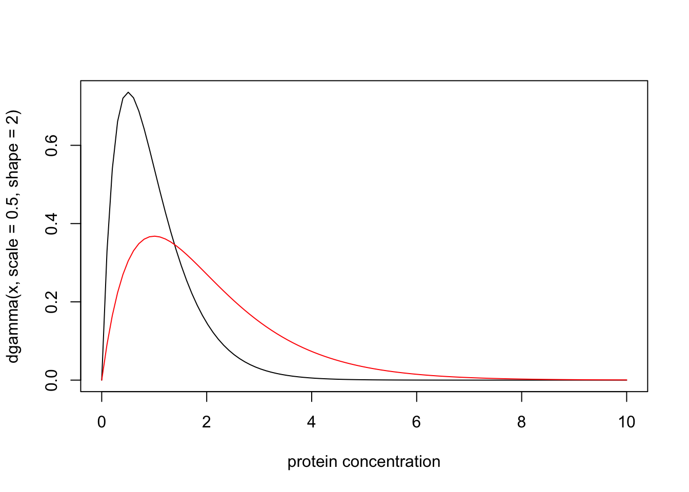

Last updated: 2017-03-06
Code version: c7339fc
This document introduces the likelihood ratio for continuous data and models, and explains its connection with discrete models.
Be familiar with the likelihood ratio for discrete data
Recall that if models \(M_0\) and \(M_1\) are fully-specified model for discrete data \(X=x\), with probability mass functions \(p(\cdot | M_0)\) and \(p(\cdot | M_1)\), then the likelihood ratio for \(M_1\) vs \(M_0\) is defined as
\[LR(M_1,M_0) := p(x | M_1)/p(x | M_0).\]
Now suppose that the data and models are continuous. So instead of a probability mass function, each model has a probability density function. Then the likelihood ratio for \(M_1\) vs \(M_0\) is usually defined as the ratio of the probability density functions. That is, we have exactly the same expression for the LR,
\[LR(M_1,M_0) := p(x | M_1)/p(x | M_0)\]
but now \(p(\cdot | M_1)\) and \(p(\cdot | M_0)\) are probability density functions instead of probability mass functions.
A medical screening test for a disease involves measuring the concentration (\(X\)) of a protein in the blood. In normal individuals \(X\) has a Gamma distribution with mean 1 and shape 2. In diseased individuals the protein becomes elevated, and \(X\) has a Gamma distribution with mean 2 and shape 2. Plotting the probability density functions of these distributions yields:
x = seq(0,10,length=100)
plot(x, dgamma(x,scale = 0.5,shape = 2), type="l", xlab="protein concentration")
lines(x, dgamma(x,scale = 1,shape = 2), type="l", col="red")
Suppose that for a particular patient we observe \(X=4.02\). Then the likelihood ratio for the model that this patient is from the normal group (\(M_n\)) vs the model that the patient is from the diseased group (\(M_d\)) is dgamma(4.02,scale=0.5,shape=2)/dgamma(4.02,scale=1,shape=2) which is 0.0718. That is, the data favour this individual being diseased by a factor of approximately 14.
Often the likelihood ratio for continuous models is simply defined as the ratio of the densities, as above. However, an alternative approach, which can yield greater insight, is instead to derive this result as an approximation, from the definition of likelihood ratio for discrete models, as follows.
The first step is to recognize that in practice all observations are actually discrete, because of finite precision. Sometimes the measurement precision is made explicit, but often it is implicit in the number of decimal places used to report an observation. For example, in the example above, where we were told that we observed a protein concentration of \(X=4.02\), it would be reasonable to think that the measurement precision is 2 decimal places, and that this observation actually corresponds to “\(X\) lies in the interval \([4.015,4.025)\)”. The probability of this observation, under a continuous model for \(X\), is the integral of the probability density function from \(4.015\) to \(4.025\). In other words, it is\(F_X(4.025)-F_X(4.015)\) where \(F_X\) denotes the cumulative distribution function for \(X\).
With this view, the likelihood for the “observation” \(X=4.02\) under \(M_n\) is actually pgamma(4.025,scale=0.5,shape=2)-pgamma(4.015,scale=0.5,shape=2) = 5.1827928\times 10^{-5}. Similarly, the likelihood under \(M_d\) is 7.217107\times 10^{-4}, and the likelihood ratio is 0.0718126.
As you can see, this approach yields a LR that is numerically very close to that obtained using the ratio of the densities, as above. This is not a coincidence! Here is why we should expect this to happen more generally. Suppose we assume that measurement precision is \(\epsilon\). So the “observation” \(X=x\) really means \(X \in [x-\epsilon,x+\epsilon]\). Then the likelihood for a model \(M\), given this observation, is \(\Pr(X \in [x-\epsilon,x+\epsilon] | M)\). Provided that the density \(p(x|M)\) is approximately constant in the region within radius \(\epsilon\) around \(x\), then this probability is approximately \(2\epsilon p(x | M)\). Thus the LR for two models \(M_1\) vs \(M_0\), is given by
\[LR = \Pr(X \in [x-\epsilon,x+\epsilon] | M_1)/ \Pr(X \in [x-\epsilon,x+\epsilon] | M_0) \approx 2\epsilon p(x | M_1)/2\epsilon p(x|M_0) = p(x|M_1)/p(x|M_0).\]
The approximation usually works well, but here is a simple example to illustrate how the approximation could break down in principle.
Consider observing a single data point \(X\) and we compare the models that \(M_0: X \sim N(0,\sigma_0)\) vs \(M_1: X \sim N(0,\sigma_1)\). Suppose that we observe \(X=0.00\), assumed to be correct to the nearest 0.01. So the ``true" LR is given by
trueLR = function(s0,s1){
L0= pnorm(0.005,sd=s0)-pnorm(-0.005,sd=s0)
L1= pnorm(0.005,sd=s1)-pnorm(-0.005,sd=s1)
return(L0/L1)
}and the approximation is given by
approxLR = function(s0,s1){
return(dnorm(0,sd=s0)/dnorm(0,sd=s1))
}Now, if \(\sigma_0\) and \(\sigma_1\) are both not too small the the approximation works fine. For example, for \(\sigma_0,\sigma_1 = 0.5,1\) we have the truth and approximation as 1.999975 and 2.
But if one of the \(\sigma_j\) is small, we have the problem that the density is not approximately constant within the region \([-0.005,0.005]\). For example, at \(\sigma_0,\sigma_1 = 0.001,1\) we have the truth and approximation as 250.6637282 and 1000.
In most cases, the Likelihood ratio for model \(M_1\) vs model \(M_0\) for a continuous random variable \(X\), given an observation \(X=x\), can we well approximated by the ratio of the model densities of \(X\), evaluated at \(x\). This approximation comes from assuming that the model density functions are approximately constant within the neighborhood of \(x\) that has radius equal to the measurement precision.
sessionInfo()R version 3.3.2 (2016-10-31)
Platform: x86_64-pc-linux-gnu (64-bit)
Running under: Ubuntu 14.04.5 LTS
locale:
[1] LC_CTYPE=en_US.UTF-8 LC_NUMERIC=C
[3] LC_TIME=en_US.UTF-8 LC_COLLATE=en_US.UTF-8
[5] LC_MONETARY=en_US.UTF-8 LC_MESSAGES=en_US.UTF-8
[7] LC_PAPER=en_US.UTF-8 LC_NAME=C
[9] LC_ADDRESS=C LC_TELEPHONE=C
[11] LC_MEASUREMENT=en_US.UTF-8 LC_IDENTIFICATION=C
attached base packages:
[1] stats graphics grDevices utils datasets methods base
other attached packages:
[1] workflowr_0.4.0 rmarkdown_1.3.9004
loaded via a namespace (and not attached):
[1] backports_1.0.5 magrittr_1.5 rprojroot_1.2 htmltools_0.3.5
[5] tools_3.3.2 yaml_2.1.14 Rcpp_0.12.9 stringi_1.1.2
[9] knitr_1.15.1 git2r_0.18.0 stringr_1.2.0 digest_0.6.12
[13] gtools_3.5.0 evaluate_0.10 This site was created with R Markdown